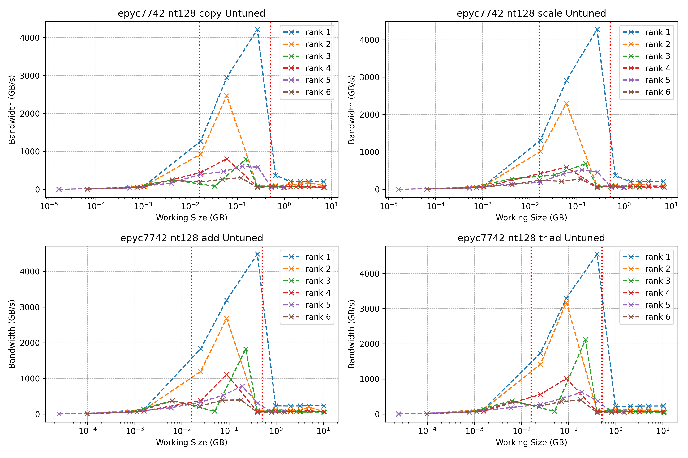
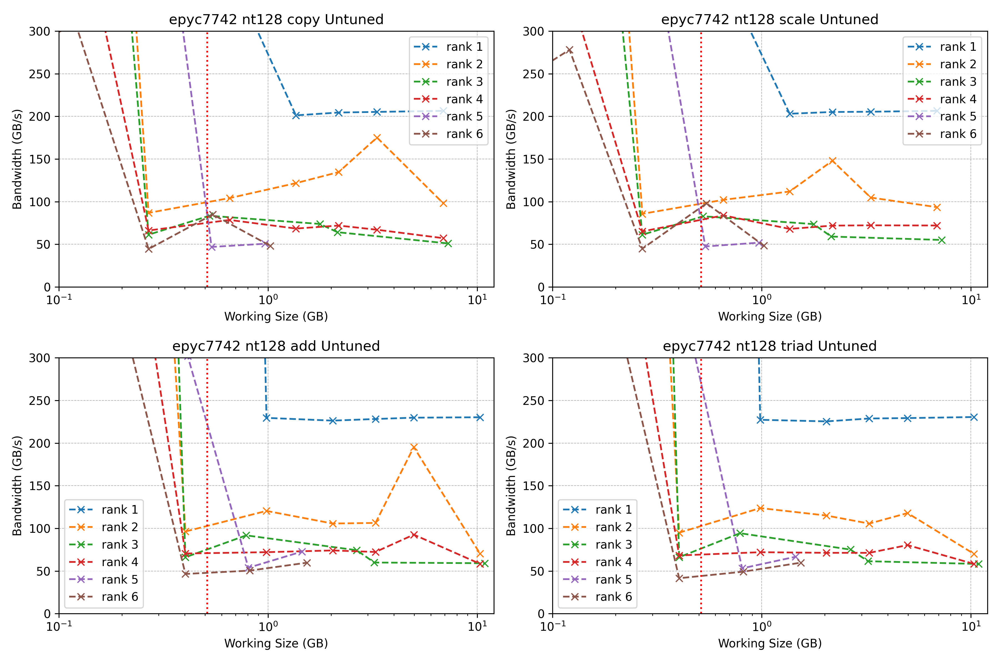
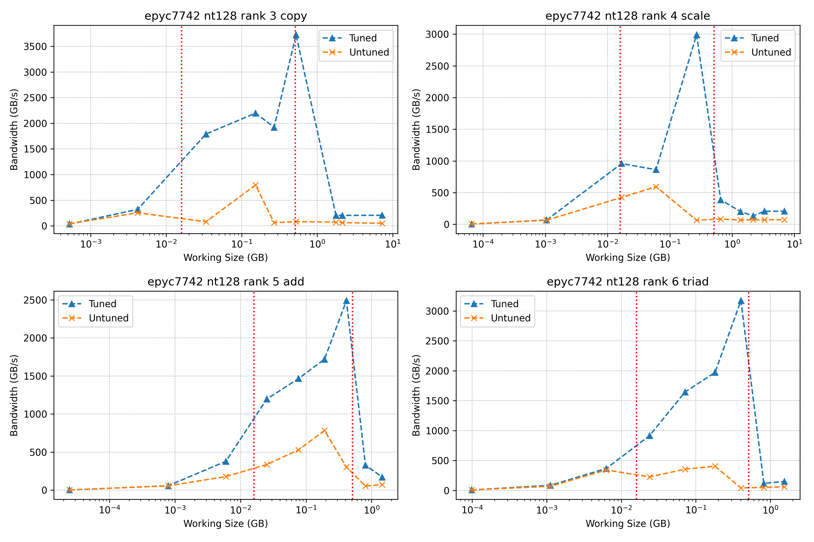
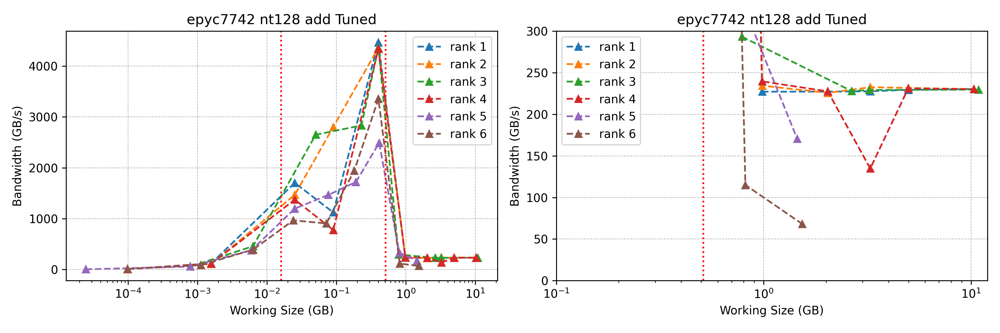
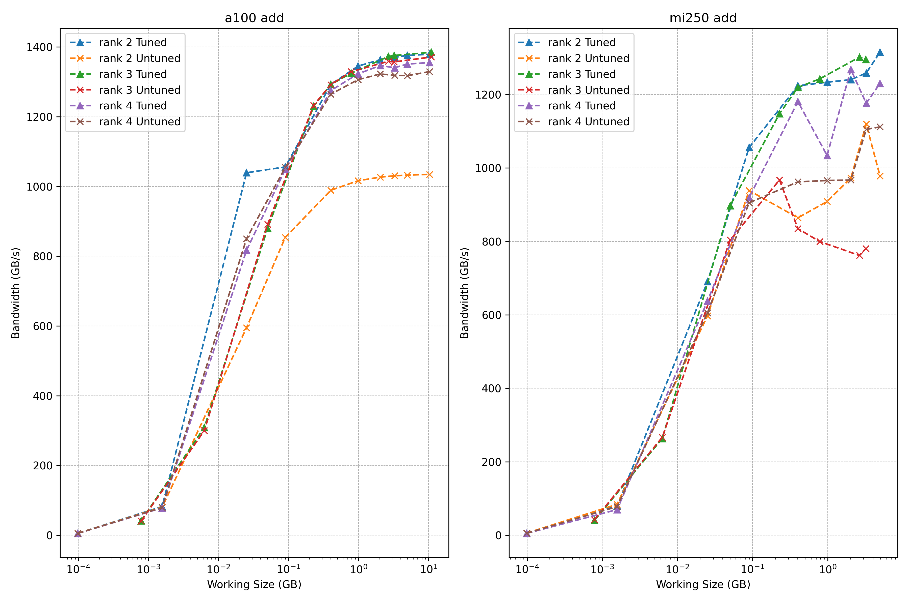
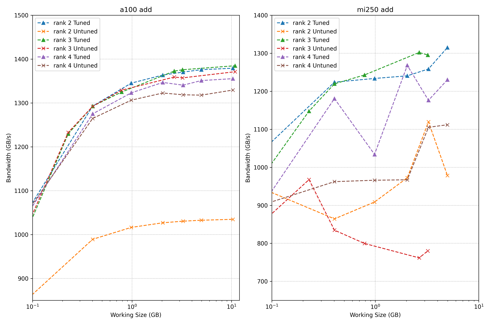
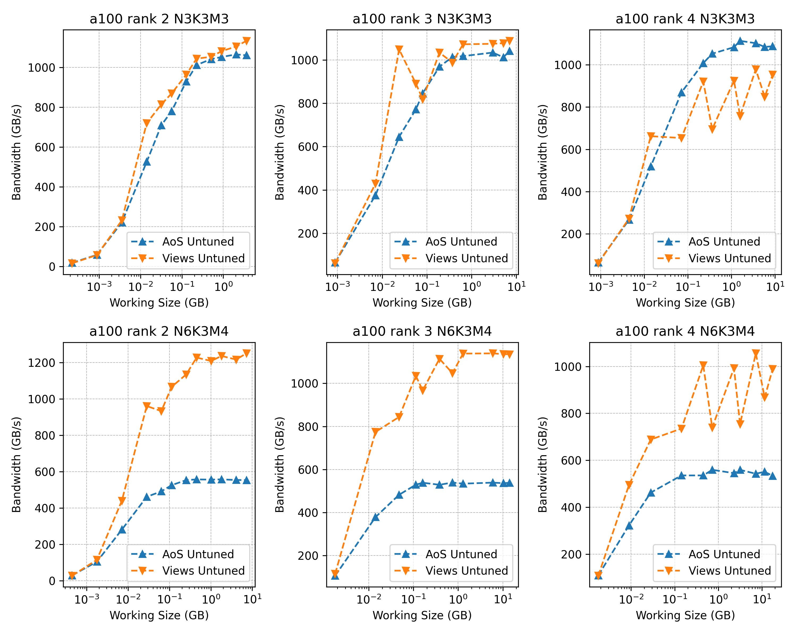
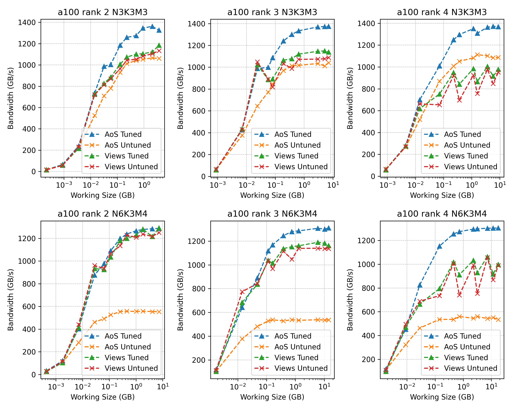
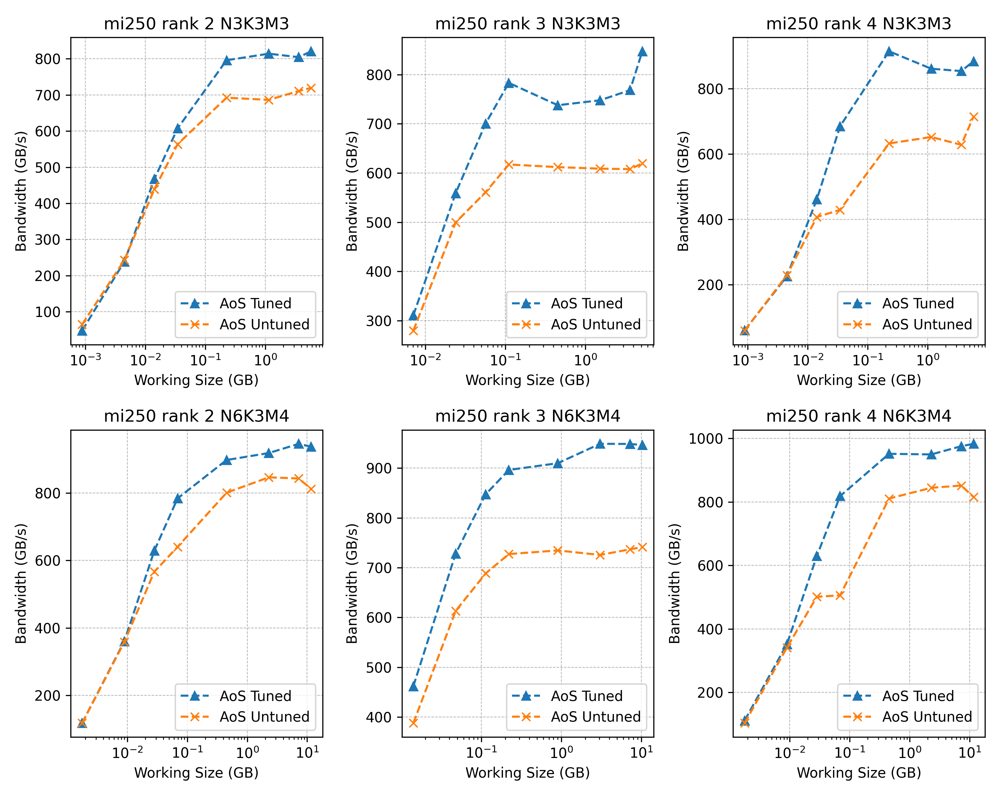

Aniket Sen, Bartosz Kostrzewa, Travis Whyte
Eric B. Gregory, Stefan Krieg, Giovanni Pederiva, Simon Schlepphorst, Estela Suarez
JSC Kokkos User Group Meeting, 25.11.2025
Kokkos supports multidimensional data structures via Views
And parallel iteration spaces via MDRangePolicy
Finally, perform kernel execution via a parallel dispatch

in the streaming region

Ideally, all ranks should perform as well as rank 1
The way Kokkos dispatches parallel workers (by default) is not optimal
This is done via seting a "tile size" for each dimension of the iteration space
One can define a "good" tiling based on some heuristics (similar to what Kokkos does internally)
But the best tiling is application and architecture dependent
KTune is a header only library that acts as a wrapper around Kokkos parallel dispatches
Automatically tunes tile sizes and caches the best configuration for future runs
Should be able to drop and replace existing code


Almost!
There will always be some overheads at higher ranks
But in the streaming region we saturate the bandwidth (rank < 5)

zooming in...

Imagine a scenario where we have a N x M matrix at every site
Writing complex kernels over such data structures is tedious
However, with an Array-of-Structs (AoS) layout, we can simplify the kernel code
And can easily use operator overloads
However, such a layout is not optimal on the gpu


Good improvements also on HIP

Can add as a third-party library (with git submodule for example)
or simply copy the contents of include/KTune to your project include directory
Include the main header where you want to use KTune
And replace Kokkos::parallel_for and Kokkos::parallel_reduce calls with KTune::parallel_for and KTune::parallel_reduce